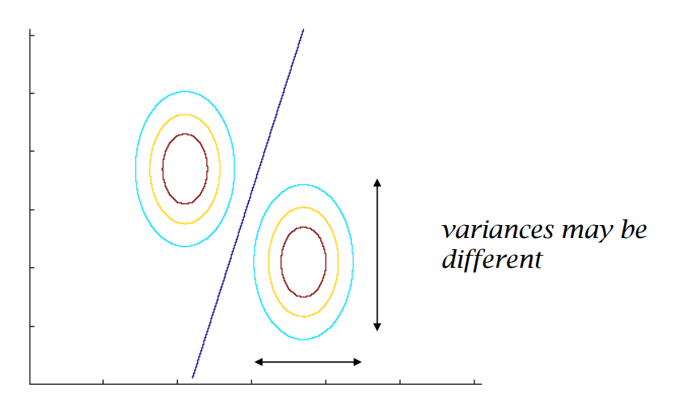

Supervised Learning - Classification - Generative Models - Naive Bayes
PDF Link: notes
Generative Model Based Algorithm
A Generative Model Based Algorithm tries to model the probability distribution of the input data and then generates new samples from this distribution. It involves learning the joint probability distribution of the features and labels of the training data, and then using this model to make predictions for new, unseen data.
Let \(D=\{(x_1, y_1), \ldots, (x_n,y_n)\}\) be the dataset, where \(x_i \in \{0, 1\}^d\) and \(y_i \in \{0, 1\}\).
General Steps in the algorithm are:
- Decide the labels by tossing a coin \(P(y_i=1)=p\).
- Decide features using the labels in step 1 using \(P(x_i|y_i)\).
The parameters in the model are as follows:
- Parameter \(\hat{p}\) to decide the label: 1
- Parameters for \(P(x|y=1)\): \(2^d-1\)
- Parameters for \(P(x|y=0)\): \(2^d-1\)
Hence, the total number of parameters \[\begin{align*} &=1 + (2^d-1) + (2^d-1)\\ &=1 + 2(2^d-1)\\ &=2^{d+1}-1 \end{align*}\]
Issues:
- Too many parameters.
- Not a reasonable model.
Alternate Generative Model
An alternate model begins with the class conditional independence assumption. The class conditional independence assumption is a common assumption made in machine learning algorithms that assumes the features of an object are conditionally independent given its class label.
Let \(D=\{(x_1, y_1), \ldots, (x_n,y_n)\}\) be the dataset, where \(x_i \in \{0, 1\}^d\) and \(y_i \in \{0, 1\}\).
General Steps in the algorithm are:
- Decide the labels by tossing a coin \(P(y_i=1)=p\).
- Decide features for \(x\) given \(y\) using: \[ P(x = [f_1, f_2, \ldots, f_d]|y) = \prod_{i=1}^d(p^y_i)^{f_i}(1-p^y_i)^{1-f_i} \]
The parameters in the model are as follows:
- Parameter \(\hat{p}\) to decide the label: 1
- Parameters for \(P(x|y=1)\): \(d\)
- Parameters for \(P(x|y=0)\): \(d\)
Hence, the total number of parameters \[\begin{align*} &=1 + d + d\\ &=2d+1 \end{align*}\]
The parameters are estimated using Maximum Likelihood Estimation.
Naive Bayes Algorithm
The model is given by, \[ P(x = [f_1, f_2, \ldots, f_d]|y) = \prod_{i=1}^d(p^y_i)^{f_i}(1-p^y_i)^{1-f_i} \] The parameters to be estimated are \(p,\{p^0_1,p^0_2,\ldots,p^0_d\},\{p^1_1,p^1_2,\ldots,p^1_d\}\). Using Maximum Likelihood Estimation, we get the following results: \[\begin{align*} \hat{p}&=\frac{1}{n}\sum_{i=1}^ny_i\\ \hat{p}^y_j &= \frac{\displaystyle \sum_{i=1}^n\mathbb{1}(f^i_j=1,y_i=y)}{\displaystyle \sum_{i=1}^n\mathbb{1}(y_i=y)} \hspace{1em} \genfrac{}{}{0pt}{}{\forall j \in\{1,2,\ldots,d\}}{\forall y \in \{0,1\}} \end{align*}\]
Prediction using the parameters
Given \(x^{test}\in\{0,1\}^d\), prediction for \(\hat{y}^{test}\) is done using the following: \[ P(\hat{y}^{test}=1|x^{test}) \ge P(\hat{y}^{test}=0|x^{test}) \] If the above is true, \(\hat{y}^{test}=1\), otherwise \(0\).
Using Bayes rule, we can get the values for \(P(\hat{y}^{test}=1|x^{test})\) and \(P(\hat{y}^{test}=0|x^{test})\): \[\begin{align*} P(\hat{y}^{test}=1|x^{test})&=\frac{P(x^{test}|\hat{y}^{test}=1)*P(\hat{y}^{test}=1)}{P(x^{test})}\\ P(\hat{y}^{test}=0|x^{test})&=\frac{P(x^{test}|\hat{y}^{test}=0)*P(\hat{y}^{test}=0)}{P(x^{test})} \end{align*}\] As we predict by comparing the two values, we can do this without actually solving for \(P(x^{test})\).
Solving for \(P(x^{test}|\hat{y}^{test}=1)*P(\hat{y}^{test}=1)\), we get, \[\begin{align*} &=P(x^{test} = [f_1, f_2, \ldots, f_d]|y^{test}=1)*P(\hat{y}^{test}=1)\\ &=\left(\prod_{i=1}^d(\hat{p}^1_i)^{f_i}(1-\hat{p}^1_i)^{1-f_i}\right)*\hat{p} \end{align*}\] Similarly we solve for \(P(x^{test}|\hat{y}^{test}=0)*P(\hat{y}^{test}=0)\).
Therefore, if \[ \left(\prod_{i=1}^d(\hat{p}^1_i)^{f_i}(1-\hat{p}^1_i)^{1-f_i}\right)*\hat{p} \ge \left(\prod_{i=1}^d(\hat{p}^0_i)^{f_i}(1-\hat{p}^0_i)^{1-f_i}\right)*(1-\hat{p}) \] we predict \(y^{test}=1\), othewise \(y^{test}=0\).
The model implements two main things:
- Class Conditional Independence Assumption
- Bayes Rule
Therefore, we call this algorithm Naive Bayes.
In short, Naive Bayes is a classification algorithm based on Bayes’ theorem, which assumes that the features are independent of each other given the class label. It calculates the probability of a sample belonging to a class by estimating the conditional probability of each feature given the class and then multiplying them together using Bayes’ theorem. Despite its simple assumption, Naive Bayes is known to perform well in various applications, particularly when there are many features but relatively few training examples.
Pitfalls of Naive Bayes
The most prominent issue with Naive Bayes is that if a feature is not seen in the training set but seen in the testing set, the prediction probability for both the classes would be zero. \[\begin{align*} P(\hat{y}^{test}=1|x^{test} = [f_1, f_2, \ldots, f_d])&\propto\left(\prod_{i=1}^d(\hat{p}^1_i)^{f_i}(1-\hat{p}^1_i)^{1-f_i}\right)*\hat{p}\\ P(\hat{y}^{test}=0|x^{test} = [f_1, f_2, \ldots, f_d])&\propto\left(\prod_{i=1}^d(\hat{p}^0_i)^{f_i}(1-\hat{p}^0_i)^{1-f_i}\right)*(1-\hat{p}) \end{align*}\] Even if one feature \(f_i\) was zero in training set, we get \(\hat{p}^1_i=\hat{p}^0_i=0\), which ultimately results in \(P(\hat{y}^{test}=0|x^{test})=P(\hat{y}^{test}=1|x^{test})=0\).
A popular fix for this is to introduce two “pseudo” datapoints with labels \(1\) and \(0\) each into the dataset whose features are all ones. This technique is also known as Laplace smoothing.
Briefly speaking, Laplace smoothing is a technique used to address the zero-frequency problem in probabilistic models, particularly in text classification. It involves adding a small constant value to the count of each feature and the number of unique classes to avoid zero probability estimates, which can cause problems during model training and prediction. By adding this smoothing term, the model becomes more robust and can handle unseen data more effectively.
Decision Function of Naive Bayes
Given \(x^{test}\in\{0,1\}^d\), prediction for \(\hat{y}^{test}\) is \(1\) if: \[\begin{multline*}\\ \frac{P(\hat{y}^{test}=1|x^{test})}{P(\hat{y}^{test}=0|x^{test})}\ge 1\\ \log \left (\frac{P(\hat{y}^{test}=1|x^{test})}{P(\hat{y}^{test}=0|x^{test})}\right )\ge 0\\ \log \left (\frac{\displaystyle\frac{P(x^{test}|\hat{y}^{test}=1)*P(\hat{y}^{test}=1)}{P(x^{test})}}{\displaystyle\frac{P(x^{test}|\hat{y}^{test}=0)*P(\hat{y}^{test}=0)}{P(x^{test})}}\right )\ge 0 \\ \log \left (\prod_{i=1}^d\frac{(\hat{p}^1_i)^{f_i}(1-\hat{p}^1_i)^{1-f_i}\hat{p}}{(\hat{p}^0_i)^{f_i}(1-\hat{p}^0_i)^{1-f_i}(1-\hat{p})}\right )\ge 0 \\ \log \left (\prod_{i=1}^d\left(\frac{\hat{p}^1_i}{\hat{p}^0_i}\right)^{f_i}\left(\frac{1-\hat{p}^1_i}{1-\hat{p}^0_i}\right)^{1-f_i}\frac{\hat{p}}{1-\hat{p}}\right )\ge 0 \\ \sum_{i=1}^d \left (f_i\log\left(\frac{\hat{p}^1_i}{\hat{p}^0_i}\right)+(1-f_i)\log\left(\frac{1-\hat{p}^1_i}{1-\hat{p}^0_i}\right)+\log\left(\frac{\hat{p}}{1-\hat{p}}\right)\right )\ge 0 \\ \sum_{i=1}^d \left (f_i\log\left(\frac{\hat{p}^1_i(1-\hat{p}^0_i)}{\hat{p}^0_i(1-\hat{p}^1_i)}\right)\right )+\sum_{i=1}^d\log\left(\frac{1-\hat{p}^1_i}{1-\hat{p}^0_i}\right)+\log\left(\frac{\hat{p}}{1-\hat{p}}\right)\ge 0\\ \\ \end{multline*}\] Hence, we can say that the decision function is of the form \(w^Tx+b\ge0\) where \(w\in\mathbb{R}^d\), \(w_i=\displaystyle\log\left(\frac{\hat{p}^1_i(1-\hat{p}^0_i)}{\hat{p}^0_i(1-\hat{p}^1_i)}\right)\) and \(b=\displaystyle\sum_{i=1}^d\log\left(\frac{1-\hat{p}^1_i}{1-\hat{p}^0_i}\right)+\log\left(\frac{\hat{p}}{1-\hat{p}}\right)\).
Therefore, the decision function of Naive Bayes is Linear.
The decision boundary is given by \(\{x=P(y=1|x)=P(y=0|x)\}\).
Gaussian Naive Bayes
Gaussian Naive Bayes, also known as Gaussian Discriminant Analysis (GDA) or Gaussian Discriminant Analysis Naive Bayes (GDANB), is a variant of the Naive Bayes algorithm for classification, which assumes that the features follow a Gaussian (normal) distribution and calculates the likelihood of a class for a given set of feature values by estimating the mean and variance of the feature values for each class.
Let \(D=\{(x_1, y_1), \ldots, (x_n,y_n)\}\) be the dataset, where \(x_i \in \mathbb{R}^d\) and \(y_i \in \{0, 1\}\).
Let \(P(x|y=1)\sim\mathcal{N}(\mu_1,\Sigma)\) and \(P(x|y=0)\sim\mathcal{N}(\mu_0,\Sigma)\). We assume that the covariances are equal.
The parameters to be estimated are \(\hat{p}\), \(\mu_0\), \(\mu_1\), and \(\Sigma\).
Using Maximum Likelihood Estimation, we get the following results: \[\begin{align*} \hat{p}&=\frac{1}{n}\sum_{i=1}^ny_i \\ \hat{\mu_1} &= \frac{\displaystyle \sum_{i=1}^n\mathbb{1}(y_i=1)*x_i}{\displaystyle \sum_{i=1}^n\mathbb{1}(y_i=1)} \\ \hat{\mu_0} &= \frac{\displaystyle \sum_{i=1}^n\mathbb{1}(y_i=0)*x_i}{\displaystyle \sum_{i=1}^n\mathbb{1}(y_i=0)} \\ \hat{\Sigma} &= \frac{1}{n} \displaystyle \sum_{i=1}^n(x_i-\hat{\mu}_{y_i})(x_i-\hat{\mu}_{y_i})^T \end{align*}\] Where \(\hat{p}\) is the proportion of data points labeled \(1\), \(\hat{\mu_1}\) is the sample mean of data points labeled \(1\), \(\hat{\mu_0}\) is the sample mean of data points labeled \(0\), and \(\hat{\Sigma}\) is covariance matrix of the centered dataset.
Prediction using Bayes Rule
Prediction is based on the following equation: \[ P(y_{test}=1|x_{test})\propto P(x_{test}|y_{test})*P(y_{test}) \] where \(P(x_{test}|y_{test})\equiv f(x_{test};\hat{\mu}_{y_{test}}, \hat{\Sigma})\) and \(P(y_{test})\equiv \hat{p}\).
Predict \(y_{test}=1\) if: \[\begin{align*} f(x_{test};\hat{\mu}_1, \hat{\Sigma})*\hat{p}&\ge f(x_{test};\hat{\mu}_0, \hat{\Sigma})*(1-\hat{p}) \\ e^{-(x_{test}-\hat{\mu}_1)^T\hat{\Sigma}(x_{test}-\hat{\mu}_1)}*\hat{p}&\ge e^{-(x_{test}-\hat{\mu}_0)^T\hat{\Sigma}(x_{test}-\hat{\mu}_0)}*(1-\hat{p}) \\ -(x_{test}-\hat{\mu}_1)^T\hat{\Sigma}(x_{test}-\hat{\mu}_1)+\log(\hat{p})&\ge -(x_{test}-\hat{\mu}_0)^T\hat{\Sigma}(x_{test}-\hat{\mu}_0) + \log(1-\hat{p}) \\ \end{align*}\] \[ \left( (\hat{\mu}_1-\hat{\mu}_0)^T\hat{\Sigma}^{-1} \right)x_{test} + \hat{\mu}_0^T\hat{\Sigma}^{-1}\hat{\mu}_0 - \hat{\mu}_1^T\hat{\Sigma}^{-1}\hat{\mu}_1 + log(\frac{1-\hat{p}}{\hat{p}}) \ge 0 \] Hence, we can say that the decision function is of the form \(w^Tx+b\ge0\) where \(w\in\mathbb{R}^d\), \(w_i= (\hat{\mu}_1-\hat{\mu}_0)^T\hat{\Sigma}^{-1}\) and \(b=\hat{\mu}_0^T\hat{\Sigma}^{-1}\hat{\mu}_0 - \hat{\mu}_1^T\hat{\Sigma}^{-1}\hat{\mu}_1 + log(\frac{1-\hat{p}}{\hat{p}})\).
Therefore, the decision function of Gaussian Naive Bayes when the covariance matrix is equal for both classes is Linear.
Decision Boundaries for Different Covariances
- When the covariance matrices are equal for both classes: As seen previously, the decision boundary is linear.

- When the covariance matrices are Identity matrices for both classes: The decision boundary is linear as well as the perpendicular bisector of the line drawn from \(\hat{\mu}_1\) to \(\hat{\mu}_0\).

- When the covariance matrices are not equal for both classes: Let \(\hat{\Sigma}_1\) and \(\hat{\Sigma}_0\) be the covariance matrices for classes \(1\) and \(0\) respectively. They are given by, \[\begin{align*} \hat{\Sigma}_1 &= \frac{1}{n} \displaystyle \sum_{i=1}^n(\mathbb{1}(y_i=1)*x_i-\hat{\mu}_1)(\mathbb{1}(y_i=1)*x_i-\hat{\mu}_1)^T \\ \hat{\Sigma}_0 &= \frac{1}{n} \displaystyle \sum_{i=1}^n(\mathbb{1}(y_i=0)*x_i-\hat{\mu}_0)(\mathbb{1}(y_i=0)*x_i-\hat{\mu}_0)^T \end{align*}\] Predict \(y_{test}=1\) if: \[\begin{align*} f(x_{test};\hat{\mu}_1, \hat{\Sigma_1})*\hat{p}&\ge f(x_{test};\hat{\mu}_0, \hat{\Sigma_0})*(1-\hat{p}) \\ e^{-(x_{test}-\hat{\mu}_1)^T\hat{\Sigma_1}(x_{test}-\hat{\mu}_1)}*\hat{p}&\ge e^{-(x_{test}-\hat{\mu}_0)^T\hat{\Sigma_1}(x_{test}-\hat{\mu}_0)}*(1-\hat{p}) \\ -(x_{test}-\hat{\mu}_1)^T\hat{\Sigma_1}(x_{test}-\hat{\mu}_1)+\log(\hat{p})&\ge -(x_{test}-\hat{\mu}_0)^T\hat{\Sigma_0}(x_{test}-\hat{\mu}_0) + \log(1-\hat{p}) \\ \end{align*}\] \[ x_{test}^T(\hat{\Sigma}_1^{-1}-\hat{\Sigma}_0^{-1})x_{test}-2(\hat{\mu}_1^T\hat{\Sigma}_1^{-1}-\hat{\mu}_0^T\hat{\Sigma}_0^{-1})x_{test}+(\hat{\mu}_0^T\hat{\Sigma}_0^{-1}\hat{\mu}_0-\hat{\mu}_1^T\hat{\Sigma}_1^{-1}\hat{\mu}_1) + log(\frac{1-\hat{p}}{\hat{p}}) \ge 0 \] Hence, we can say that the decision function is of the form \(x^TQx-2b^Tx+c\ge0\) where \(Q=\hat{\Sigma}_1^{-1}-\hat{\Sigma}_0^{-1}\), \(b=\hat{\mu}_1^T\hat{\Sigma}_1^{-1}-\hat{\mu}_0^T\hat{\Sigma}_0^{-1}\), and \(c=(\hat{\mu}_0^T\hat{\Sigma}_0^{-1}\hat{\mu}_0-\hat{\mu}_1^T\hat{\Sigma}_1^{-1}\hat{\mu}_1) + log(\frac{1-\hat{p}}{\hat{p}})\). Hence, the decision boundary is a quadratic function when the covariance matrices are not equal for both classes.

Credits
Professor Arun Rajkumar: The content as well as the notations are from his slides and lecture.